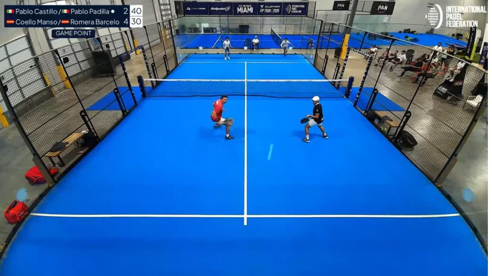
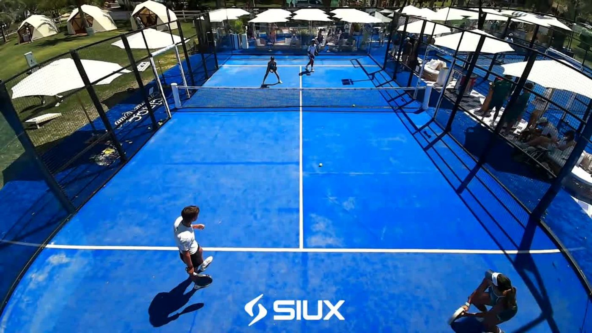

Normativa RGPD para Cámaras en Pistas de Pádel: Guía Legal 2026 para Clubes
Cartelería obligatoria en pista, consentimiento informado, streaming y grabación de menores: cómo instalar cámaras de vídeo sin riesgo de multas de la AEPD.

- •1. El origen de la confusión: Seguridad vs Grabación Deportiva Bajo Demanda
- •2. Los 4 Pilares Obligatorios de la AEPD para Cámaras en Pistas
- •3. Menores de Edad en Pista: La Regla de los 14 Años en España
- •4. El Peligro Oculto que Nadie Ve: Los Trípodes y Móviles Caseros
- •5. Retransmisión en Streaming por YouTube: Qué exige la ley
- •6. El Contrato de Encargado de Tratamiento (Art. 28 RGPD)
- •7. Checklist Rápido de Cumplimiento RGPD para Clubes de Pádel
- •Preguntas Frecuentes
- •Artículos y Guías Relacionadas
Cada mes hablo con decenas de directores y gerentes de clubes de pádel en toda España. Cuando les enseño cómo funciona el sistema de cámaras en pista, el 90% coincide en lo mismo: «Javier, a los jugadores les vuelve locos poder llevarse sus puntazos al móvil y nos encantaría ponerlo en las pistas centrales, pero me da miedo que venga la Agencia Española de Protección de Datos (AEPD) y nos meta una sanción de 15.000 € o 20.000 €».
Ese temor es comprensible. El Régimen General de Protección de Datos (RGPD) y las noticias sensacionalistas sobre multas a empresas han creado una psicosis generalizada. Sin embargo, hay un dato que pocos directores conocen: instalar cámaras deportivas en pistas de pádel es 100% legal en España y en la Unión Europea si se cumplen cuatro requisitos elementales.
En esta guía práctica te explico, sin rodeos jurídicos indescifrables y con la legislación vigente en la mano (Reglamento UE 2016/679 y Ley Orgánica 3/2018 de Protección de Datos y Garantía de Derechos Digitales - LOPDGDD), exactamente qué exige la ley, cómo gestionar menores y streaming, por qué los trípodes caseros son el verdadero peligro legal de tu club y cómo blindar tu instalación en menos de 24 horas.
1. El origen de la confusión: Seguridad vs Grabación Deportiva Bajo Demanda
El gran error de partida de muchos clubes (e incluso de algunos asesores legales generalistas) es tratar las cámaras de las pistas como si fueran cámaras de videovigilancia de seguridad.
Videovigilancia de Seguridad (Art. 22 LOPDGDD)
- Finalidad: Prevención de delitos, robos o actos vandálicos.
- Operativa: Grabación 24/7 ininterrumpida de pasillos, cajas, recepción o parkings.
- Acceso: Personal de seguridad privada autorizado o gerencia.
- Retención: Plazo máximo obligatorio de borrado a los 30 días naturales.
- Regulación: Ley de Seguridad Privada 5/2014 y Art. 22 LOPDGDD.
Grabación Deportiva Bajo Demanda (Save my Play)
- Finalidad: Análisis técnico, entretenimiento y entrega de vídeo al propio jugador.
- Operativa: Memoria volátil continua (buffer de 25s) que solo almacena vídeo cuando un jugador pulsa voluntariamente el botón físico en la red. Si nadie pulsa, el clip se descarta en la RAM sin guardarse jamás en disco duro.
- Acceso: Exclusivo del jugador en su móvil o panel privado tras identificarse.
- Retención: Almacenamiento en la nube cifrada y borrado automático configurable.
- Regulación: RGPD Art. 6.1 (ejecución de servicio/consentimiento del interesado).
Al no ser videovigilancia de seguridad, tu club no necesita contratar una empresa de seguridad privada ni dar de alta sistemas en la Dirección General de la Policía. Se trata de un servicio deportivo añadido contratado y utilizado a voluntad por los propios usuarios de la pista.
2. Los 4 Pilares Obligatorios de la AEPD para Cámaras en Pistas
Para que la AEPD no pueda poner ni un solo reparo a la instalación de cámaras fijas en tus pistas, el sistema debe cumplir estrictamente estos 4 principios recogidos en el RGPD (UE 2016/679):
Principio de Información Previa (El Cartel Oficial en la Pista)
Nadie puede ser grabado sin saberlo. El club está legalmente obligado (Art. 13 RGPD) a colocar un cartel informativo homologado en un lugar claramente visible antes de acceder a la pista (en la malla exterior o junto a la puerta de entrada). El cartel debe identificar al club como responsable, la finalidad deportiva de la grabación, los canales para ejercer los derechos ARSULIPO y un enlace o punto de contacto para consultar la política de privacidad completa.
Principio de Minimización y Proporcionalidad del Ángulo
Las cámaras deben tener una lente calibrada para encuadrar exclusivamente la superficie de juego de la pista (10x20 metros). Queda terminantemente prohibido enfocar pasillos generales de tránsito del club, terrazas de cafetería, vestuarios o zonas públicas exteriores. Si una cámara enfoca accidentalmente una zona común no deportiva, la AEPD sí puede sancionar al club por captación desproporcionada.
Acción Voluntaria del Jugador (Pulsador Físico Inteligente)
El sistema patentado con pulsador en red de Save my Play es la garantía técnica más sólida ante una inspección. La cámara no está guardando vídeos de personas que no quieren ser grabadas; solo cuando uno de los 4 jugadores decide voluntariamente pulsar el botón tras un punto espectacular, el sistema extrae los últimos 25 segundos y los envía a la nube. Si los jugadores de un turno no desean utilizar el sistema, simplemente no tocan el pulsador y no se almacena ningún dato personal.
Seguridad, Cifrado y Servidores en la Unión Europea
El material audiovisual jamás debe quedar guardado en un disco duro o pendrive desprotegido en el mostrador del club, al que cualquier recepcionista o empleado pueda acceder. Los vídeos deben transmitirse mediante protocolos seguros con cifrado TLS/SSL y almacenarse en centros de datos ubicados en territorio de la Unión Europea bajo estándares de seguridad ISO/IEC 27001.
3. Menores de Edad en Pista: La Regla de los 14 Años en España
La presencia de niños y jóvenes en escuelas de pádel y torneos de menores es el punto que más dudas genera en los gerentes de club. La normativa española es muy precisa en este punto:
Artículo 7 de la LOPDGDD 3/2018
En España, el tratamiento de los datos personales de un menor solo es lícito con su propio consentimiento cuando sea mayor de catorce años. Para menores de 14 años, es preceptivo y obligatorio el consentimiento expreso de los padres o tutores legales.
¿Cómo debe aplicar esta regla tu club para tener un blindaje legal absoluto?
- En la Escuela de Pádel Infantil (menores de 14 años): Añade una casilla específica en el formulario de matrícula anual de la escuela: «[X] Autorizo la grabación en vídeo de las sesiones de entrenamiento en pistas tecnificadas del club con fines exclusivos de análisis deportivo y corrección técnica por parte del cuerpo técnico». Los monitores pueden utilizar los vídeos para enseñar a los alumnos su colocación en la bandeja o el saque.
- En Torneos Federados de Menores: El reglamento oficial de competición de la federación suele incluir la cláusula de captación de imágenes deportivas para la difusión del torneo. Asegúrate de que el formulario de inscripción lo recuerde.
- En Alquileres de Partidos Libres: Si un grupo de adultos juega un partido amistoso con un niño menor de 14 años y los padres no están presentes para autorizarlo, la instrucción es sencilla y directa: no se acciona el pulsador de grabación. Sin pulsación no hay fichero de vídeo generado.
4. El Peligro Oculto que Nadie Ve: Los Trípodes y Móviles Caseros
Aquí está la paradoja más habitual en los clubes deportivos. Muchos directores rechazan instalar cámaras fijas oficiales por miedo a la ley, pero cada tarde permiten que decenas de socios coloquen trípodes telescópicos, pulpos o ventosas con sus teléfonos móviles pegados al cristal de fondo.
Permitir trípodes y teléfonos particulares en las pistas entraña riesgos legales y económicos severos para el club:
| Criterio Legal & Operativo | Cámaras Fijas Save my Play | Trípode / Móvil Particular |
|---|---|---|
| Cartelería homologada | Sí (incluida en el acceso) | No (infracción Art. 13 RGPD) |
| Tiempo de grabación | Solo 25s al pulsar el botón | 90 min continuos sin filtro |
| Captación de terceros ajenos | Imposible (ángulo fijo a pista) | Alta (graba pasillos y pistas vecinas) |
| Grabación de audio y conversaciones | Filtrado / No intrusivo | Capta conversaciones privadas íntegras |
| Responsabilidad civil (golpes / roturas) | Cero (instalada fuera de impacto) | Alta (riesgo de rotura de cristales o caídas) |
Si un jugador coloca un móvil en un trípode, graba a menores en la pista contigua y sube el vídeo a TikTok o Instagram sin su consentimiento, la familia puede denunciar a quien grabó y al club como responsable del recinto por permitir grabaciones no autorizadas en su instalación. Contar con un sistema oficial regulado elimina la necesidad de los trípodes y da al club el control legal absoluto.
5. Retransmisión en Streaming por YouTube: Qué exige la ley
Retransmitir las semifinales y finales de un torneo de fin de semana o los partidos de liga por YouTube o Twitch es una de las mejores herramientas de marketing para un club de pádel. Sin embargo, al emitir en abierto para todo internet, las exigencias de información se intensifican:
- Aviso de Streaming en Pista Central: Debe colocarse un aviso específico adicional en la entrada de la pista: «Zona con retransmisión en directo por streaming público».
- Cláusula de Aceptación en Cuadros de Torneo: Al inscribirse en el torneo (a través de la web del club, Playtomic o formulario físico), el reglamento debe especificar que las fases finales que se disputen en la pista central serán emitidas en los canales oficiales del club.
- Derecho a no participar en la emisión: Si un jugador clasificado manifiesta expresamente que no desea que su imagen sea difundida en directo, el club debe respetar su derecho ofreciéndole disputar el encuentro en una pista sin señal de streaming o pausando la emisión pública durante ese turno.
6. El Contrato de Encargado de Tratamiento (Art. 28 RGPD)
Este es el documento que todo inspector de protección de datos solicita en primera instancia: el Contrato de Encargado de Tratamiento entre el club (Responsable del Tratamiento) y el proveedor tecnológico del sistema de cámaras (Encargado del Tratamiento).
En Save my Play suministramos a cada club asociado este anexo contractual conforme al Artículo 28 del RGPD listo para la firma de la gerencia, donde se certifica formalmente:
Garantías Contractuales de Save my Play con tu Club:
7. Checklist Rápido de Cumplimiento RGPD para Clubes de Pádel
Antes de encender las cámaras de tu club, verifica estos 6 puntos de control:
¿Tienes dudas sobre cómo instalar cámaras en tu club cumpliendo la ley?
Te asesoramos sin coste y te entregamos la plantilla legal personalizada y el contrato de encargado de tratamiento listo para tu instalación.
Cartel Oficial Homologado RGPD para Pistas de Pádel
Plantilla legal en PDF de zona deportiva videodocumentada conforme al RGPD (UE 2016/679) y LOPDGDD 3/2018 para colocar en la reja de la pista, con recuadros para los datos de tu club y cláusula de consentimiento de menores.
Preguntas Frecuentes
¿Es legal instalar cámaras de grabación en las pistas de pádel de un club privado o municipal?
Sí, es totalmente legal. La grabación de partidos a solicitud de los propios jugadores para análisis técnico o entretenimiento deportivo está amparada por el RGPD (UE 2016/679) siempre que se coloque el cartel informativo oficial en el acceso a la pista, el ángulo enfoque exclusivamente el interior de la pista de juego y los vídeos se almacenen en servidores seguros de la Unión Europea.
¿Qué pasa si un jugador del partido no quiere ser grabado?
En los sistemas inteligentes bajo demanda como Save my Play, si alguno de los cuatro jugadores manifiesta que no desea ser grabado, simplemente nadie pulsa el botón físico en la red durante el partido. Como el sistema trabaja con un buffer en memoria volátil de 25 segundos y no almacena nada en disco salvo que se presione el pulsador, no se genera ningún archivo de vídeo ni se recopila ningún dato personal.
¿Qué requisitos legales deben cumplirse para grabar a menores de 14 años en la pista?
En España, el Artículo 7 de la LOPDGDD 3/2018 exige el consentimiento expreso de los padres o tutores legales para el tratamiento de imágenes de menores de 14 años. En las escuelas de pádel infantiles, este consentimiento se recaba fácilmente mediante una casilla específica en la hoja de matrícula de inicio de temporada.
¿Necesita mi club dar de alta un fichero de grabación ante la AEPD?
No. Desde la entrada en vigor del RGPD en 2018 ya no existe el trámite de inscripción de ficheros ante el Registro de la AEPD. Lo que el club debe mantener internamente actualizado es su Registro de Actividades de Tratamiento (RAT), donde se incluirá el tratamiento de grabación deportiva y el contrato firmado con el proveedor tecnológico como Encargado de Tratamiento (Art. 28 RGPD).
¿Por qué un trípode colocado por un socio tiene más riesgo de multa que una cámara fija oficial?
Porque los trípodes suelen grabar 90 minutos continuos sin control del club, captan involuntariamente pasillos o pistas adyacentes donde juegan menores o personas sin cartel informativo previo, y el usuario puede difundir el vídeo libremente en redes sociales exponiendo al club a reclamaciones de terceros por permitir grabaciones no consentidas en su recinto.
Artículos y Guías Relacionadas
Barómetro de Cámaras y Digitalización en Clubes de Pádel 2026: Datos de +4.800 Pistas
Cuota de Playtomic vs Matchi vs Resasports, penetración de cámaras (8,4%) y ROI en 4.820 clubes.

Tecnología & RGPDLos 9 Mejores Sistemas de Cámaras con IA para Pistas de Pádel en 2026: Comparativa
Comparativa de precios, hardware y ROI: Save My Play, PUSHIT, MATCHi TV, Wingfield y PlaySight.
¿Cuánto cuesta instalar cámaras en una pista de pádel y cómo se amortizan? [Precios y ROI 2026]
Hardware a 180 € y software a 45 €/mes. Desglose de 3 modelos de amortización.
¿Quieres probar las cámaras en las pistas de tu club?
Instalación rápida en menos de 2 horas. Hardware a 180 € y software con almacenamiento ilimitado por 45 €/mes. Agenda una demo o pregúntanos por WhatsApp sin compromiso.